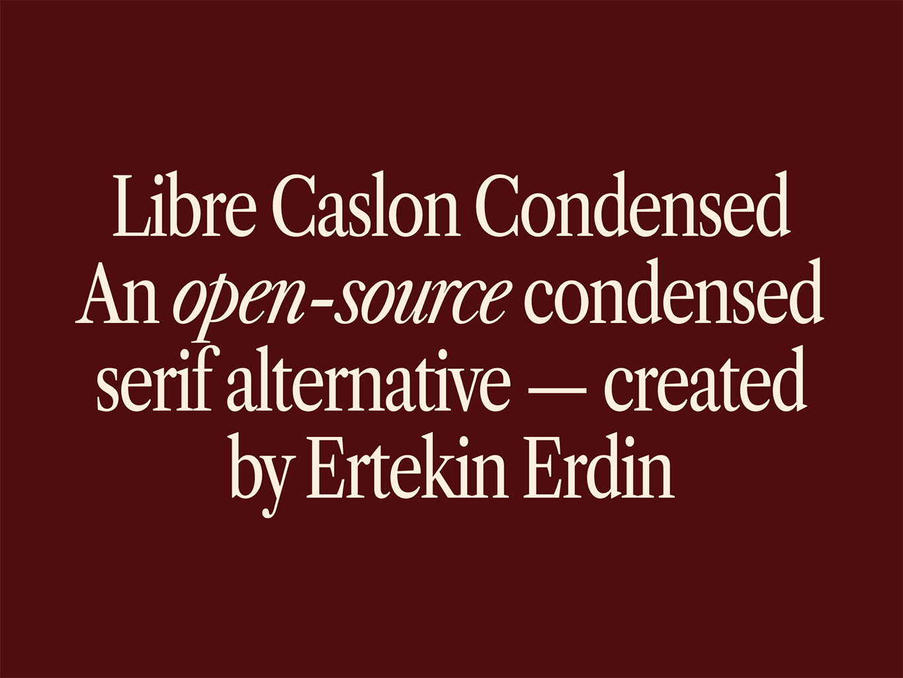

Libre Caslon Condensed is an open-source condensed serif alternative designed to fill the gap in the market for high-quality condensed serif alternatives. This font, which is created by modifying the "Libre Caslon Text" font family, offers a harmonious blend of elegance and readability, making it an ideal choice for various design projects.
To contribute, see github.com/ertekinno/libre-caslon-condensed.

======= N/A >>>>>>> 7a2b2a7d0749be9d1b364ff28ffc48ffc33085b9